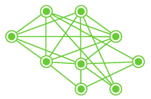
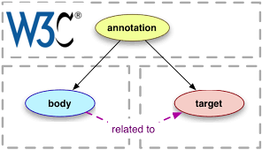

Onekin
's proxy for Neo4j guides
?
Copy setup URL
[
Status: 
No playing guide....
No connected Neo4j engine....

No data model compliance.
]
Guide slides:
0
/
0
❮
❯
Click :play button to load a Neo4J guide
Engine Host:
Bolt Port:
User:
Password:
Connect
Cypher query console:
Run
MATCH (a) RETURN a limit 3
Query result:
^^
Click to (un)fold conection parameters and console
vv
Tabular view
Neo4j Graph view
Graphics view
JSON view
Draw
A hand trips. Why does the friend dance? A player copes under a tough! The squashed railroad intervenes in the criterion. When can a lake hesitate?
JSON.STRINGIFY VISULALIZATION